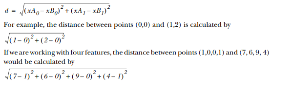

<!DOCTYPE html>
<html>
<head>
	<title>Classifying with distance measurements</title>
	<link rel="stylesheet" href="https://cdn.jsdelivr.net/npm/bootstrap@4.0.0/dist/css/bootstrap.min.css" integrity="sha384-Gn5384xqQ1aoWXA+058RXPxPg6fy4IWvTNh0E263XmFcJlSAwiGgFAW/dAiS6JXm" crossorigin="anonymous">
    <script src="https://cdnjs.cloudflare.com/ajax/libs/prism/9000.0.1/prism.min.js" integrity="sha512-UOoJElONeUNzQbbKQbjldDf9MwOHqxNz49NNJJ1d90yp+X9edsHyJoAs6O4K19CZGaIdjI5ohK+O2y5lBTW6uQ==" crossorigin="anonymous" referrerpolicy="no-referrer"></script>
	<script src="https://cdnjs.cloudflare.com/ajax/libs/prism/9000.0.1/components/prism-actionscript.min.js" integrity="sha512-YSZLJbdXeh9n0X0aJAuJUk8ArMBEu1F0LQPeiydyVXUMlJ2QZPAFzp/84lkxk9M0NpTJ5aSEUTlbsC4UoUpwYw==" crossorigin="anonymous" referrerpolicy="no-referrer"></script>
    <link rel="stylesheet" href="https://cdnjs.cloudflare.com/ajax/libs/prism-themes/1.9.0/prism-a11y-dark.min.css" integrity="sha512-bd1K4DEquIavX49RSZHIE0Ye6RFOVlGLhtGow9KDbLYqOd/ufhshkP0GoJoVR1jqj7FmOffvVIKuq1tcXlN9ZA==" crossorigin="anonymous" referrerpolicy="no-referrer" />
    <link rel="stylesheet" href="style.css">
	<style>
		body {
			font-family: Arial, sans-serif;
			padding: 20px;
			max-width: 800px;
			margin: 0 auto;
		}
		h1 {
			font-size: 36px;
			margin-bottom: 20px;
		}
		h2 {
			font-size: 28px;
			margin-top: 40px;
			margin-bottom: 10px;
		}
		p {
			font-size: 16px;
			line-height: 1.5;
			margin-bottom: 20px;
		}
		img {
			max-width: 100%;
			margin-bottom: 20px;
		}
	</style>
</head>
<body>
	<header>
		
		<h1> Classifying with distance measurements</h1>
		<p>Posted on JUNE 2, 2022 by Zulqarnain</p>
	</header>
	
	<main>
		<section>
			<h2>Introduction</h2>
	<p>k-Nearest Neighbors <br>
        <strong>Pros</strong>: High accuracy, insensitive to outliers, no assumptions about data
        <br>
        <strong>Cons</strong>: Computationally expensive, requires a lot of memory
        Works with: Numeric values, nominal values</p>

    </section>
		
		<section>
            <p>
                The first machine-learning algorithm we’ll look at is k-Nearest Neighbors (kNN). It
works like this: we have an existing set of example data, our training set. We have
labels for all of this data—we know what class each piece of the data should fall into.
When we’re given a new piece of data without a label, we compare that new piece of
data to the existing data.
<br> every piece of existing data. We then take the most similar
pieces of data (the nearest neighbors) and look at their labels. We look at the top k
most similar pieces of data from our known dataset; this is where the k comes from. (k
is an integer and it’s usually less than 20.) Lastly, we take a majority vote from the k
most similar pieces of data, and the majority is the new class we assign to the data we
were asked to classify.
            </p>
        </section>
    <section>
        <h2>Example</h2>
        <p>
            Let’s run through a quick example classifying movies into romance or action movies. Someone watched a lot of movies and counted the number of kicks and kisses in
each movie. I’ve plotted six movies by the number of kisses and kicks in each movie in
figure 2.1. Now, you find a movie you haven’t seen yet and want to know if it’s a
romance movie or an action movie. To determine this, we’ll use the kNN algorithm. 
        </p>
        	
    </section>
    <section>
        <p>
            We find the movie in question and see how many kicks and kisses it has. It’s plotted as
a large question mark along with a few other movies in figure 2.1. These values are
listed in table.
	
        </p>
    </section>
		
<section>
    <p>
        We don’t know what type of movie the question mark movie is, but we have a way of
figuring that out. First, we calculate the distance to all the other movies. 
</p>
	
</section>
<section>
    <p>
        Now that we have all the distances to our unknown movie, we need to find the k-nearest
movies by sorting the distances in decreasing order. Let’s assume k=3. Then, the three
closest movies are He’s Not Really into Dudes, Beautiful Woman, and California Man. The
kNN algorithm says to take the majority vote from these three movies to determine the
class of the mystery movie. Because all three movies are romances, we forecast that the
mystery movie is a romance movie
    </p>
</section>
<section>
    <p>We’ll work through a real machine learning algorithm in this chapter, and along
        the way I’ll introduce the Python tools and machine learning terminology. First, however, we’ll go over a simple example of the kNN algorithm to make sure we’re using
        the algorithm correctly. 
    </p>
    <pre>
        <code class="language-javascript">
                """"
                from numpy import *
                import operator
                def createDataSet():
                 group = array([[1.0,1.1],[1.0,1.0],[0,0],[0,0.1]])
                 labels = ['A','A','B','B']
                 return group, labels   
                
        </code>
        </pre>
        <p>In this code, we import two modules. The first one is NumPy, which is our scientific
            computing package. The second module is the operator module, which is used later
            in the kNN algorithm for sorting. </p>
            
</section>
<section>
    <h2> Putting the kNN classification algorithm into action</h2>
    , to run the kNN algorithm on
one piece of data. I’ll first show the function in pseudocode and then in actual
Python, followed by a detailed explanation of what everything in the code does.
Remember, the goal of this function is to use the kNN algorithm to classify one piece
of data called inX. Pseudocode for this function would look like this:
<br>
For every point in our dataset: <br>
    calculate the distance between inX and the current point
    sort the distances in increasing order
    take k items with lowest distances to inX
    find the majority class among these items
    return the majority class as our prediction for the class of inX
    
 <pre>
    <code class="language-javascript">
            """"
            def classify0(inX, dataSet, labels, k):
                dataSetSize = dataSet.shape[0]
                diffMat = tile(inX, (dataSetSize,1)) – dataSet
                sqDiffMat = diffMat**2 
                sqDistances = sqDiffMat.sum(axis=1) 
                distances = sqDistances**0.5 
                sortedDistIndicies = distances.argsort()
                classCount={} 
                for i in range(k):
                    voteIlabel = labels[sortedDistIndicies[i]] 
                    classCount[voteIlabel] = classCount.get(voteIlabel,0) + 1 
                    sortedClassCount = sorted(classCount.iteritems(), 
                    key=operator.itemgetter(1), reverse=True) 
                return sortedClassCount[0][0]        
    </code>
    </pre>
    <p>The function classify0() takes four inputs: the input vector to classify called inX,
        our full matrix of training examples called dataSet, a vector of labels called labels,
        and, finally, k, the number of nearest neighbors to use in the voting. The labels vector
        should have as many elements in it as there are rows in the dataSet matrix. You calculate the distances B using the Euclidian distance where the distance between two vectors, xA and xB, with two elements, is given by</p>

    </section>
<section>
    <p>
        Following the distance calculation, the distances are sorted from least to greatest (this
is the default). Next, C the first k or lowest k distances are used to vote on the class of
inX. The input k should always be a positive integer. Lastly, D you take the classCount
dictionary and decompose it into a list of tuples and then sort the tuples by the second
item in the tuple using the itemgetter method from the operator module imported
in the second line of the program.
<br> This sort is done in reverse so you have largest to
smallest. Finally, you can return the label of the item occurring the most frequently. 
 To predict the class, type the following text at the Python prompt: 
 <pre>
    <code class="language-javascript">
            """"
            kNN.classify0([0,0], group, labels, 3)        
    </code>
    </pre>
    </p>
</section>    
</main>
    
</body>
</html>